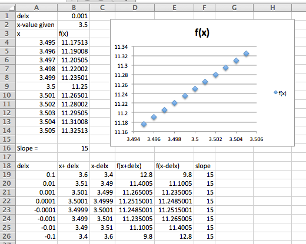
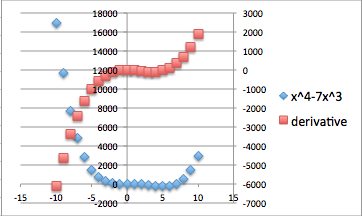
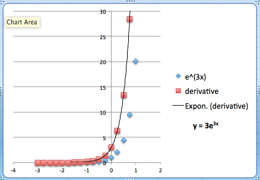

Section 3.2 Numeric Derivatives and Limits
¶Link to worksheets used in this section
In the previous section, we looked at marginal functions, the difference between f(x+1) and f(x). For functions that are only defined at integer values, this is the obvious way to define a rate of change. However for functions that are defined on an interval, we would like to use the information at values closer to our value of x.
Intuitively, we would like to be able to zoom in on the graph of f(x) at a point until the graph looks like a straight line, then pick two points on that line, and find the slope as the rise over the run. The rate of change is then the slope of the line we have found. If we could zoom arbitrarily far, this process would give an instantaneous rate of change, or the derivative of the function at that point.
Definition 3.2.1. Formal derivative at a point.
For a function \(f(x)\text{,}\) the instantaneous rate of change of \(f(x)\) at \(x=x_0\text{,}\) or the derivative of \(f(x)\text{,}\) at \(x=x_0\), denoted as \(f'(x)\text{,}\) is defined as
Our task in this section is to turn our intuitive notion and definition and into a process that lets us find the value, and to find it efficiently.
Example 3.2.2. A simple derivative at a point.
Let \(f(x)=x^2\text{.}\) We would like to find \(f'(1)\text{.}\)
Solution A: We start with our intuitive notion. We want to look at the graph of \(f(x)\text{,}\) zoomed in far enough that the graph looks like a straight line. I set up a worksheet to look at the graph of \((x)=x^2\) near \(x_0=1\text{.}\) Since I want to be able to zoom in. I set up the graph so that it plots points that are multiples of \(del\ x\) from \(x=x_0\text{.}\) I also want to plot the line connecting the points \((x_0,f(x_0))\) and \((x_0,f(x_0+del\ x))\) and notice that the slope of the secant line between them is
For this example \(x_0=1\text{.}\) If \(del\ x=1\text{,}\) we can see that the function and the secant line are clearly distinct.

The worksheet is designed to make it easy to change the value of \(del\ x\text{.}\)

As we can see, if we let \(del\ x=1\text{,}\) the slope is 3, but we have not zoomed in far enough for the graph of f(x) to look like a straight line. Letting \(del\ x=0.01\text{,}\) the slope is 2.01, and the graphs of the function and secant line seem to be the same.

With some experimentation, taking both positive and negative values of \(del\ x\text{,}\) we get the following table of values:
| \(del\ x\) | slope | \(\ \ \ \) | \(del\ x\) | slope |
| 1 | 3 | \(\ \ \ \) | -1 | 1 |
| 0.1 | 2.1 | \(\ \ \ \) | -0.1 | 1.9 |
| 0.01 | 2.01 | \(\ \ \ \) | -0.01 | 1.99 |
| 0.001 | 2.001 | \(\ \ \ \) | -0.001 | 1.999 |
It is clear that as \(del\ x\) gets very small, the slope of the tangent line gets closer and closer to 2. Thus \(f'(1)=2\text{.}\)
Solution B: The method of the first solution takes too much work and requires us to reset a worksheet and keep track of the slope as we try a number of values for \(del\ x\text{.}\) We would like to create a worksheet that simply shows the values of the slope of the secant line for values of \(del\ x\) and takes the value that this approaches. We can set up a worksheet where each line takes \(del\ x\) from the previous line and divides by 10.

We get the same value whether we start \(del\ x\) at 1 or -1. Once again, we find \(f'(1)=2\text{.}\)
Solution C: This method of finding the derivative still has a number of difficulties. In the example above, the exact answer we want (in this case 2) did not show up in any of our computations. We also find that if we make \(del\ x\) too small, we run into a problem called round off error. If the next chapter we will look at methods that compute derivatives symbolically, but for this chapter we want an easy method of approximation. We will use the approximation technique that is used by most graphing calculators when they compute the derivative. They use a “balanced difference quotient” where we find the slope of the secant line between points \(del\ x\) before and after the point we are interested in. As the picture below shows, compared to either the right secant or the left secant, for most functions the balanced secant is closer to being parallel to the tangent line.
We will use the default on calculators, that is we will use \(del\ x = 0.001\text{.}\)

For our example this gives our familiar result that \(f'(1)=2\text{.}\)
We formalize this last approach
Definition 3.2.3. Calculator Approximation of the Derivative.
For the rest of this text, when we need to compute a numerical approximation to the derivative we will use the calculator approximation of the derivative.
We should note that the calculator rule is an approximation technique, rather than a definition. It will give a misleading answer for functions that do not approximate a straight line in a window that is 0.002 wide. In this course, the approximation will only cause a problem with functions that have corners or cusps, like the functions \(f(x)=|x|\) and \(f(x)=x^{(2/3)}\) at \(x=0\text{.}\) The main advantage of the using the calculator rule is that it is straightforward enough to compute to allow us to plot a function and its derivative on a single graph. This allows us to compare the graph of the function with the graph of the derivative.
Example 3.2.4. A Function and its Derivative.
Compare the graph of \(f(x)=x^2-2 x+1\) and the graph of its derivative, using separate axes for the two graphs. What features of the graph of \(f(x)\) can be located by using the graph of \(f'(x)\text{?}\)
Solution: Since this problem will serve as a template for a question we will look at many times, it is worthwhile to look at it in detail. We start by setting up a workbook that will have the structure we need to compute a chart of values for \(f(x)\) and \(f'(x)\text{.}\)

The picture above gives the minimal amount we need to type in. The rest will be done with quick filling. The entry of cell B1 gives the formula for the function. In cell D5 we evaluate the function using the first value of x from cell A5. We have two values of x in cells A5 and A6 so that we can quick fill to get a list of x values. We use absolute references for \(del\ x\text{,}\) so it will not change on quick fills. We then fill cells E5 and F5 from cell D5, then fill row 6 from row 5, then fill the rest of the chart from rows 5 and 6.

It is then a straightforward task to plot the two curves. We notice that the graph of the function is a parabola. If the derivative is negative, the graph of \(f(x)\) is decreasing. If the derivative is positive, the graph of the function \(f(x)\) is increasing. The graph of \(f(x)\) reaches its minimum at the vertex, which is also where \(f'(x)=0\text{.}\) We also notice that the derivative of this parabola seems to be a straight line.
Several of our observations from this example work in general. Looking at a single point, the derivative of a function is the slope of the line tangent to the graph at that point. The tangent line is a best linear approximation to the graph at a point. Looking at the derivative at lots of points, the graph of a function is increasing when the derivative is positive, and the graph of a function is decreasing when the derivative is negative. For the graph to have a point that is locally a maximum or minimum, the derivative cannot be positive or negative, so the derivative must either be zero or undefined for the graph of the function to have a maximum or minimum. Finding places where functions reach their highest and lowest values is an important activity in mathematics. We will look at these applications in more depth in upcoming sections. The reader is warned that we can have places where the derivative is zero but the function is still increasing or decreasing.
Example 3.2.5. The derivative of a more complicated function.
Compare the graph of \(f(x)=x^3 (x^2-36)\) and the graph of its derivative, using separate axes for the two graphs. What features of the graph of \(f(x)\) can be located by using the graph of \(f'(x)\text{?}\)
Solution: The setup for this example is very similar to the last problem.

This time we notice three places where the derivative seems to be zero, when x is near -5, 0, and 5. We use goal seek on the derivative and find that the derivative is zero when \(x=-4.648\text{,}\) 0, or 4.648. Looking at the graph of f(x) at those points, we see that \(f(x)\) has a maximum when \(x=-4.648\text{,}\) and a minimum when \(x=-4.648\text{.}\) When \(x=0\text{,}\) \(f(x)\) is neither a maximum nor a minimum.
In the next chapter we will look at ways to find the derivative of a function symbolically. We can already reason our way to symbolically finding the derivative of simple functions. If our function \(f(x)\) is constant or linear, then the graph of the function is its own tangent line, so the derivative is simply the slope of the graph. For quadratic functions we noticed that the graph of the derivative seems to be linear. If we can guess the form of the derivative, we can use trendlines to produce a formula.
Example 3.2.6. Using trendlines to get the formula of a derivative.
Use trendlines to find a formula for the derivative of \(f(x)=2x^2+5x-7\text{.}\)
Solution: The setup for this example is very similar to the last problem. We simply change the function. This involves changing the formulas in cells B1 and D5, then using quick copy to change the formulas for the cells in columns D through F.

Once we have points for the derivative we add a trendline using a linear model. We set the options to show both the formula for the trendline and the value of \(R^2\text{.}\) The fact that \(R^2=1\text{,}\) indicates the trendline we found exactly fits the data. In the workbook connected to this section there is a page for Example 6B. It uses parameters for the coefficients on a quadratic formula, so that you can explore the derivative of a general quadratic function.
A Note on Terminology: It is worthwhile to point out some ambiguity in the terms used in this section and the previous section. We have been using the term for \(marginal\ f(x+1)\) the change \(f(x+1)-f(x)\text{,}\) where \(f(x)\text{,}\) might be revenue, or cost, or profit. This is the standard definition of a marginal function from finance or economics. However, if you do a web search on “calculus marginal revenue” you will find that most calculus books treat the marginal function as simply another name for the derivative. While they are related, they are not the same thing. In the next chapter we will find that it is often easier to produce a formula for the derivative of a function rather than the related marginal function, which is why the derivative is used for the marginal function. However, in this text, we will stick to the correct definition of marginal functions.
Summary
The notion of derivative is one of the key concepts of calculus. The concept of the derivative of a function is closely connected to the concept of marginal function. We gave three ways of understanding the derivative of a function at a point.
Intuitive understanding: The derivative of \(f(x)\text{,}\) at \(x=x_0\) denoted as \(f'(x_0)\text{,}\) is the slope of the line obtained by zooming in on the graph at \((x_0,f(x_0 ))\) until it looks like a straight line.
Formal definition: The derivative of \(f(x)\text{,}\) denoted as \(f'(x)\text{,}\) is defined as
The calculator approximation: The derivative of \(f(x)\text{,}\) can be approximated using the formula
Exercises 3.2.1 Exercises: Numeric Derivatives and Limits
¶1-10) For each specified function and x-value, do the following:
Find a value of \(del\ x\) small enough that graph of the function looks like a straight line on the region from \(5*del\ x\) before the x-value to \(5*del\ x\) after the x-value. Graph the function in this region and find the slope of the corresponding secant line
Estimate the derivative by finding the slope of the secant when \(del\ x\) takes the values 0.1, 0.01, 0.001, 0.0001, -0.1, -0.01, -0.001, and -0.0001. Give a value of the limit of the slope.
Use the calculator estimate to estimate the slope of the tangent.
Compare the value of the derivative \(f'(x)\) with the corresponding value of the marginal function \(marginal\ f(x+1)\text{.}\)
1.
Use \(f(x)=x^2+3\) at \(x=2\text{.}\)
-
Using Slope= (B14-B4)/(10*B1) we get the following

So the slope for this choice of delx is 4.
Your may have chosen a slightly different delx, and as long as the graph looks roughly linear that would be fine.
-
You can either change delx and record each of the slopes in the Excel sheet above, or we can set up another table that records the slopes for us. We prefer the second method because the table of values allows us to inspect the pattern more easily.
Excel commands for the table:

The limit is 4.
-
\begin{equation*} f'(x)\approx\frac{f(x+0.001)-f(x-0.001)}{0.002} \end{equation*}
So \(f'(x)\approx\frac{f(2+.001)-f(2-.001)}{.002}=4\) (second entry in the table for delx)
-
\begin{equation*} Marginal\ f(x+1)=f(x+1)-f(x). \end{equation*}\begin{equation*} Marginal\ f(2+1)=f(3)-f(2)=(9+3)-(4+3)=5. \end{equation*}
2.
Use \(f(x)=(3x)^2-5\) at \(x=-2\text{.}\)
3.
Use \(f(x)=5(x-2)^2\) at \(x=3.5\text{.}\)
-

The slope of the secant line is 15.
From work in part a, the limit is also 15.
From Row 21 we see that the slope of the tangent line is estimated to be 15
-
\begin{equation*} Marginal\ f(4.5)=f(4.5)-f(3.5) \end{equation*}\begin{equation*} =5 (2.5)^2-5(1.5)^2=5(6.25-2.25)=20. \end{equation*}
So the derivative is 15 and the marginal function is 20 at this point.
4.
Use \(f(x)=7\) at \(x=5\text{.}\)
5.
Use \(f(x)=7x-4\) at \(x=3\text{.}\)
-

The slope of the secant line is 7.
From work in part a, the limit is also 7.
From Row 21 we see that the slope of the tangent line is estimated to be 7
-
\begin{equation*} Marginal\ f(4)=f(4)-f(3)=7 \end{equation*}
So the derivative is 7 and the marginal function is 7 at this point.
6.
Use \(f(x)=x^3-5\) at \(x=2\text{.}\)
7.
Use \(f(x)=e^{2x}\) at \(x=1\text{.}\)
-

The slope of the secant line is 14.78.
From work in part a, the limit is also 14.78.
From Row 21 we see that the slope of the tangent line is estimated to be 14.78
-
\begin{equation*} Marginal\ f(2)=f(2)-f(1)=e^4-e^2\approx 47.21 \end{equation*}
Comment: Notice the very large difference between the derivative and the marginal function. The exponential function is very curved and this curvature means that the discrepancy between the marginal function and the derivative will be large. The difference between the two is much smaller for graphs that are less curved.
8.
Use \(f(x)=2^x\) at \(x=3\text{.}\)
9.
Use \(f(x)=\ln(x)\) at \(x=5\text{.}\)
-

The slope of the secant line is 0.2.
From work in part a, the limit is also 0.2.
From Row 21 we see that the slope of the tangent line is estimated to be 0.2
- \begin{equation*} Marginal\ f(6)=f(6)-f(5)=\ln(6)-\ln(5)\approx 0.18 \end{equation*}
10.
Use \(f(x)=x^3-5\) at \(x=2\text{.}\)
For problems 11-18) For each specified function, do the following:
On a single graph, but using separate axes, graph the function and its derivative.
Using goal seek, identify places where the derivative is 0 in the interval \(-10 \lt x \lt 10\text{.}\)
For each point where the derivative is 0, tell whether the corresponding point on the graph of the function is locally a maximum, minimum, or neither.
11.
Let \(f(x)=x^3-4 x\text{.}\)

The derivative seems to be zero at \(x=-1.15\) and at \(x=1.15\text{.}\)
We have a local maximum at \(x=-1.15\) and a local minimum at \(x=1.15\text{.}\)
12.
Let \(f(x)=x^4-49 x^2\text{.}\)
13.
Let \(f(x)=x^4-7 x^3\text{.}\)
- 
The derivative seems to be 0 when \(x=0\) and \(x=5.25\text{.}\)
It seems that the graph has a minimum at \(x=o\text{.}\) It seems that the graph has neither at \(x=5.25\text{.}\)
14.
Let \(f(x)=5x e^{-x}\text{.}\)
15.
Let \(f(x)=8x e^{-x^2 }\text{.}\)

It looks like the derivative is 0 at \(x=-0.707\) and at \(x-0.707\text{.}\)
The first of those points is a local minimum. The second point is a local maximum.
16.
Let \(f(x)=3x+5\text{.}\)
17.
Let \(f(x)=\pi^2\text{.}\)

The derivative is always 0 for this function.
All points are both local maximums and local minimums.
18.
Let \(f(x)=x^3-4 x\text{.}\)
For problems 19-22) For each specified function, do the following:
On a single graph, but using separate axes, graph the function and its derivative.
Looking at the graph of the derivative, decide what kind of function is an appropriate model for the derivative.
Add a trendline to produce a formula for the derivative.
19.
Let \(f(x)=x^3-6 x^2+3x\text{.}\)

The derivative looks like a polynomial of order 2. It is a parabola.
-
The trendline indicates the formula for the derivative can be approximated by
\begin{equation*} y=3x^2-12x+3 \end{equation*}
20.
Let \(f(x)=x^4-36 x^2+x\text{.}\)
21.
Let \(f(x)=e^{3x}\text{.}\)
- 
The derivative looks like an exponential function.
-
The trendline indicates the formula for the derivative can be approximated by
\begin{equation*} y=3 e^{3x} \end{equation*}
22.
Let \(f(x)=\ln(x)\text{.}\)